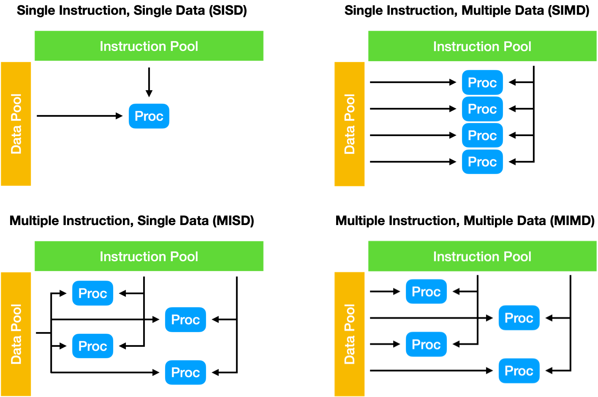
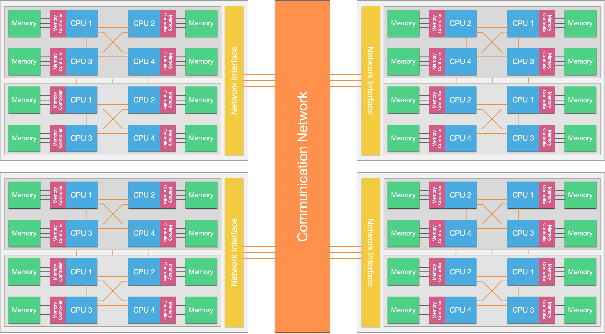
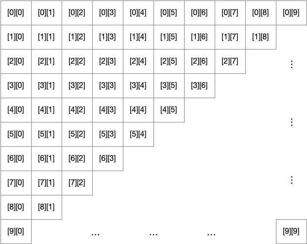
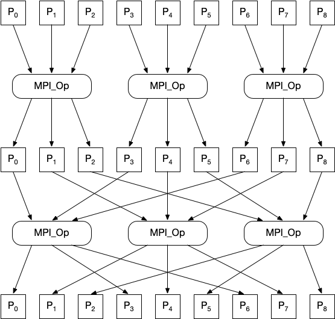
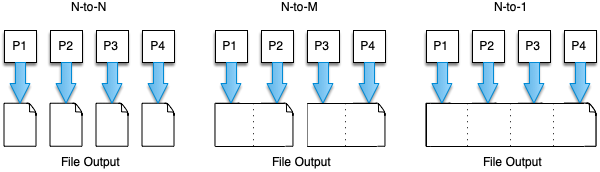

6. Internode Parallelism
Overview
This week we’re stepping off-node. We’re going to look at how we can make use of an entire distrubted-memory supercomputer.
We’re going to cover:
- A brief return to Flynn’s taxonomy
- Distributed-memory systems
- The Message Passing Interface (MPI)
- Point-to-point operations
- Collective operations
- Basic parallel I/O in MPI
The Return of Flynn
Again, we start this unit with a quick revisit of Flynn’s taxonomy.

Figure 1: Flynn’s taxonomy
In the last unit we talked about the two extensions to the taxonomy with SIMT (Single Instruction, Multiple Threads) and SPMD (Single Program, Multiple Data). In this unit we’re working primarily in the SPMD world, only now our Single Program is running across multiple compute nodes simultaneously, and our memory space is distributed across those compute nodes (i.e. distributed memory, rather than shared memory).
Distributed Memory Systems
A Distributed Memory System is one where each processor has its own private memory, and computational tasks can only operate on local data. If remote data is required, the computational task must communicate with one or more remote processes to request the data.
In a distributed memory system, there are typically a number of processors, each with their own memory, and some form of high speed interconnect that allows applications running on each of the processors to communicate with one another.
On HPC systems this interconnect is typically a low-latency network dedicated to internode communications (e.g. Infiniband [See Unit 2]).

Figure 2: Modern systems are typically a mix of shared and distributed memory systems, where individual ccNUMA-type shared-memory nodes are interconnected to one another to form a distibuted memory system.Modern day HPC systems are typically a hybrid of shared memory and distributed memory systems (see Figure 2). Purely shared memory systems are typically limited in their size, while purely distributed memory systems may be expensive to design and build. Hybrid systems strike the balance between cost and scalability, using multi-core and multi-processor nodes, interconnected by a high-speed fabric.
From the developer’s perspective, the main difference between a shared memory system and a distributed memory system is that in a distributed memory system, memory must be managed and shared between processors explicitly. This is usually achieved through Message Passing, where processes explicitly communicate with one another through send and receive functions. The de facto standard for message passing on HPC systems is the Message Passing Interface, or MPI.
It should be noted that while individual nodes are ccNUMA-like shared memory systems, they can be programmed as and operate as a distributed memory system. Moreover, distributed memory systems can be programmed as and operate as shared memory systems using approaches such as Partitioned Global Address Space (PGAS), where the PGAS implementation mimics a shared memory system by performing remote memory sends and receives transparently.
The Message Passing Interface
The Message Passing Interface (MPI) is a portable message passing standard designed for distributed-memory parallel computers. The standard (version 4.0) currently defines an API with almost 500 functions, in C and Fortran (support for Fortran 2008 was added in the MPI 3.0 standard, while the C++ bindings were deprecated).
Today, there are numerous implementations of the MPI standard available. Notable examples include the open-source implementations OpenMPI, MPICH and MVAPICH, and the vendor-developed implementations Intel MPI, Cray MPI and bullx MPI (note that many of these vendor-developed implementations are based on an open-source implementation).
History
Efforts to define a standardised message passing interface began in 1991 and subsequently led to the Workshop on Standards for Message Passing in a Distributed Memory Environment (held in April 1992). At this workshop, the essential features of a message passing library were discussed, and a small working group was formed with the task of defining a standard.
The first draft of the MPI standard was designed by Jack Dongarra, Tony Hey and David W. Walker and presented at the Supercomputing Conference (SC) in 1993. Following a period of consultation, the 1.0 standard was released in June 1994.
Figure 3: Version 1.0 of the MPI Standard
The MPI effort involved around 80 people from 40 organisations, mainly in the United States and Europe. It was funded heavily by DARPA, the U.S. National Science Foundation (NSF), and the European commission (among others).
Since its creation, MPI has become the de facto standard for communications on distributed memory systems. The standard is maintained by the MPI Forum, and the current version of the standard is 4.0; the 4.1 and 5.0 standards are a work in progress.
Further Reading
Getting Started
MPI is available as a library on most distributed systems (including Viking); in order to compile and link an MPI program, the compiler must be aware that the MPI library is required, and where its header files and libraries can be found. Luckily, most MPI implementations provide a compiler wrapper for this purpose (often called mpicc, mpif90, etc.).
On Viking, we can load an MPI implementation (in this case OpenMPI 4.0.5 with GCC 10.2.0) and then we can view the wrapped compile line with the -show compile time flag.
$ module load OpenMPI/4.0.5-GCC-10.2.0
$ mpicc -show
gcc -I/opt/apps/eb/software/OpenMPI/4.0.5-GCC-10.2.0/include -L/opt/apps/eb/so
ftware/hwloc/2.2.0-GCCcore-10.2.0/lib -L/opt/apps/eb/software/libevent/2.1.12-
GCCcore-10.2.0/lib64 -Wl,-rpath -Wl,/opt/apps/eb/software/hwloc/2.2.0-GCCcore-
10.2.0/lib -Wl,-rpath -Wl,/opt/apps/eb/software/libevent/2.1.12-GCCcore-10.2.0
/lib64 -Wl,-rpath -Wl,/opt/apps/eb/software/OpenMPI/4.0.5-GCC-10.2.0/lib -Wl,-
-enable-new-dtags -L/opt/apps/eb/software/OpenMPI/4.0.5-GCC-10.2.0/lib -lmpi
So, every time we compile an MPI program, rather than using gcc, we use mpicc and it will use the compile line above (plus our own compile time flags).
Running an MPI application requires multiple copies of the application to be launched simultaneously (unlike an approach like OpenMP that can create threads programmatically when parallelism is required). Again, each MPI implementation provides a mechanism for launching an application multiple times across a distributed system. In the case of OpenMPI, this is the mpirun application.
In order to compile and run an MPI application on 4 processes, we might do something like:
$ mpicc -O3 -o my_program my_program.c
$ mpirun -n 4 ./my_program
This will compile our program with all of the required MPI libraries, and then launch the application 4 times simultaneously (potentially on the same node, potentially on up to 4 separate nodes).
But, you might ask, where do we start with writing an MPI application?
The first thing we do in an MPI program, is initialise the MPI library (and its associated communicators, etc.). We do this with the MPI_Init() function, which takes as arguments the application’s argc and argv parameters as pointers so that it can remove any extraneous parameters added by mpirun.
We finish our MPI programs in a similar way, with the MPI_Finalize() function. So, a typical MPI program might follow the following format:
... // other libraries
#include <mpi.h>
... // other libraries, variable definitions, functions, etc
int main(int argc, char *argv[]) {
MPI_Init(&argc, &argv);
... // application code
MPI_Finalize();
}
Most MPI functions in C return an integer (which in this case, we’ve discarded). Like many return values in C, it indicates whether the operation has been successful. If the MPI operation has been successful, it will return MPI_SUCCESS. Other return values indicate that a problem has occurred.
Communicators
Much of MPI is based around the notion of communicators. A communicator defines a group of MPI processes that are referred to by a communicator handle. The MPI_COMM_WORLD handle encompasses all MPI processes that have been started as part of a parallel program. Most MPI operations require a communicator handle to be passed, to determine where messages should be sent to or received from.
You can query the size of a communicator, and a process’s rank within the communicator with the MPI_Comm_size() and MPI_Comm_rank() functions. Each take a communicator handle and a pointer to an integer, which is where MPI stores the result of the call.
With the 4 MPI functions we’ve covered so far, we can now write a very simple MPI “Hello, World!” application.
#include <stdio.h>
#include <mpi.h>
int main(int argc, char *argv[]) {
int rank, size;
MPI_Init(&argc, &argv);
MPI_Comm_size(MPI_COMM_WORLD, &size);
MPI_Comm_rank(MPI_COMM_WORLD, &rank);
printf("Hello, World! I am process %d of %d\n", rank, size);
MPI_Finalize();
return 0;
}
We can compile this program with mpicc, and run it with mpirun. For example,
$ mpicc -o hello hello.c
$ mpirun -n 4 ./hello
Hello, World! I am process 1 of 4
Hello, World! I am process 3 of 4
Hello, World! I am process 2 of 4
Hello, World! I am process 0 of 4
$ mpirun -n 8 ./hello
Hello, World! I am process 5 of 8
Hello, World! I am process 1 of 8
Hello, World! I am process 3 of 8
Hello, World! I am process 7 of 8
Hello, World! I am process 0 of 8
Hello, World! I am process 6 of 8
Hello, World! I am process 4 of 8
Hello, World! I am process 2 of 8
Exercise
Try out the “Hello, World!” program above on Viking. Try running it in an interactive job and a batch job.
Try out different compilers and MPI implementations. What differences do you notice between MPI variants? (not in terms of performance, but in terms of function)
Performance Monitoring
Before moving on, we’ll just briefly revisit an issue from Unit 3 – techniques for monitoring performance.
The MPI library provides a convenient timing function that we can use (and it’s one of the few functions that doesn’t return MPI_SUCCESS or an error!).
double MPI_Wtime();
The MPI_Wtime() function simply returns a representation of the wall-clock time, since some time in the past. If we record the time before and after a function, the difference will represent how long the operation took, in seconds. You should note that in most MPI implementations, MPI_Wtime() is not synchronised between ranks. This must be done manually by the programmer (if required).
In order to perform more complex monitoring and analysis, you might find tools like Scalasca (available on Viking) or other MPI profiling tools useful.
Further Reading
Point-to-Point Operations
In a message passing progam, messages carry data between processes. Those messages can be as simple as a single value, or a complex structure (e.g. all of the data for a particle, a row from a matrix, etc.). For a message passing program to operate in an orderly manner, there are some important parameters that must be known in advance:
- Which process is sending data
- Where is the data that is being sent
- What kind of data is being sent
- How much data is being sent
- Which process is receiving the message
- Where should the receiving process put the data
- What amount of data is the receiving process expecting
All MPI calls that transfer data have to specify these parameters in some way. Before we look at how to send and receive data, let’s first address the question of “what kind of data is being sent” and “how much data is being sent”.
Data Types
When sending messages, it’s important to be aware of what type of data is being sent (or received). If one process is sending a float, while another is expecting to receive a double, there may well be an issue!
MPI handles this by having a data type argument in most function specifications. There are a number of predefined datatypes in the MPI standard that broadly coincide with C’s primitives (signed and unsigned variants, etc.). A selection of the basic datatypes are shown in the table below.
| MPI Type | C Type |
MPI_CHAR |
signed char |
MPI_INT |
signed int |
MPI_LONG |
signed long |
MPI_FLOAT |
float |
MPI_DOUBLE |
double |
MPI_BYTE |
unsigned char |
Each message-sending/receiving function call in the MPI standard requires a type and a count to be specified. The number of bytes to be sent can then be calculated from these two values.
You can see a more complete list of predefined data types in the MPICH documentation.
Derived Data Types
As well as the predefined data types, we can build custom data types in MPI. This is especially useful if the data to be sent and received is being stored in a custom data type, e.g., a vector or a custom struct. We can also use custom datatypes to transfer non-contiguous data.
The process for creating and using a derived type in MPI (and C) is:
- Set up a new
MPI_Datatypevariable - Configure the new data type
- Commit the data type
- Use the data type
- Free the data type
So, let’s create a data type to hold a particle in a simulation:
struct particle_t {
double x, y, z;
int cell_id;
double weight;
double vx, vy, vz;
};
In this example, each particle exists within a grid, and stores the ID of the cell that it is currently contained within. Additionally, the weight of the particle, its x, y and z position and its velocity in the x, y and z direction is stored.
In order to send a particle from one process to another, a custom type must be defined that indicates that there are three doubles, followed by an integer, followed by four doubles. We can create such a data type using MPI_Type_create_struct().
MPI_Datatype mpi_particle_t;
int blocklengths[3] = { 3, 1, 4 };
int displacements[3] = { 0, 0, 0 };
MPI_Datatype types[3] = { MPI_DOUBLE, MPI_INT, MPI_DOUBLE };
MPI_Type_create_struct(3, blocklengths, displacements, types, &mpi_particle_t);
MPI_Type_commit(&mpi_particle_t);
... // use the datatype in our application
MPI_Type_free(&mpi_particle_t);
In this example the displacement values are all set to 0, but with non-zero entries we can create “holes” in our data types (for example, if we didn’t want/need to send the cell_id, we could remove it from the derived type).
Another example might be if we wanted to send a column of a matrix; recall that C is “column major” and so a column would be non-contiguous in memory. We can set up such a data type using the MPI_Type_vector() function.
double my_matrix[10][10];
// fill the 10x10 matrix with values
MPI_Datatype my_column;
MPI_Type_vector(10, 1, 10, MPI_DOUBLE, &my_column);
MPI_Type_commit(&my_column);
... // use new data type
MPI_Type_free(&my_column);
In this example, we’ve created a new data type that will contain 10 blocks, each with a size of 1 data type (in this case 1 double), strided by 10 elements. On a 10 × 10 matrix this would correspond to a column (i.e. one value in every 10).

Figure 5: The conceptual layout of a 10 × 10 2D array in C
Using our new MPI data type, we can send any column by using the pointer address &(my_matrix[0][col]). This will start our call at an offset column, which will then be strided by 10 for each value.
Sending and Receiving Messages
Hopefully, we’ve now covered plenty of the infrastructure behind MPI (setup, communicators, data types). We can now start to look at how we actually send data across our communicators to other processes.
Let’s start with the simplest two functions, MPI_Send() and MPI_Recv().
int MPI_Send(const void *buf, int count, MPI_Datatype datatype, int dest, int tag, MPI_Comm comm);
int MPI_Recv(void *buf, int count, MPI_Datatype datatype, int source, int tag, MPI_Comm comm, MPI_Status *status);
The parameters required by each function largely mirror each other, with an additional status parameter for MPI_Recv(). The first argument in both function calls is a pointer to a buffer. This should be an allocated buffer either containing data to send, or with enough allocated space to store the data received. The next two arguments indicate the number of elements of a particular type that will be sent or the maximum number of elements of a particular type that can be received. Note that in the case of MPI_Recv(), the maximum number of elements may not be received, but can be queried with the MPI_Get_count() function afterwards.
Each function then requires the destination or source of the message. If the source is not known, the special wildcard value MPI_ANY_SOURCE can be provided to indicate that a message can be received from any rank. The tag parameter allows us to “tag” a message such that only a matching receive call will accept the message. Again, the wildcard MPI_ANY_TAG can be used by the receiving process if the tag value is not known. Finally, the communicator is provided to both functions. Importantly, a message can only be received if the source, tag and communicator match that of the sending process (unless wildcard values are used by the receiver).
The final parameter in the MPI_Recv() function is the MPI_Status object. In many cases, applications are written such that the status object does not require inspection; in these cases the special value MPI_STATUS_IGNORE can be used to avoid allocating a status variable. But in the case that either of the wildcards are used, the status object will contain the correct values after execution. The MPI_Status object is defined in the specification to contain three fields: MPI_SOURCE, MPI_TAG and MPI_ERROR. Additional fields are implementation specific and so should not be addressed directly.
So, for example:
double my_buffer[100];
// code to fill the buffer with data
if (rank == 0) {
// send 50 doubles to rank 1, with the tag 23.
int dest = 1;
int tag = 23;
MPI_Send(my_buffer, 50, MPI_DOUBLE, dest, tag, MPI_COMM_WORLD);
} else if (rank == 1) {
// receive up to 100 doubles from any rank with any tag
MPI_Status status;
MPI_Recv(my_buffer, 100, MPI_DOUBLE, MPI_ANY_SOURCE, MPI_ANY_TAG, MPI_COMM_WORLD, &status);
int count;
MPI_Get_count(&status, MPI_DOUBLE, &count); // how many doubles did we actually receive?
printf("I've received %d doubles from %d, with the tag %d\n", count, status.MPI_SOURCE, status.MPI_TAG);
}
In many cases, point-to-point communications are used to exchange border information (e.g. a “halo-exchange”) between nearest neighbours. A common pattern in such applications is to call an MPI_Send(), followed immediately by an MPI_Recv().
However, beware! In most MPI implementations it is likely that the MPI_Send() call will return as soon as the data has been moved into an internal send buffer; but in some implementations the send may be fully synchronous and may block until a matching receive call is issued. In this case, the application will deadlock (since all processes will block on their send call before issuing their receive call).
We can resolve this potential issue in a few different ways. One simple solution is that we could use an if (rank % 2 == 0) statement to ensure that all even numbered ranks call send before receive and all odd numbered ranks call receive before send, ensuring there’s always a process expecting to receive data.
Alternatively, we could use the combined MPI_Sendrecv() function.
int MPI_Sendrecv(const void *sendbuf, int sendcount, MPI_Datatype sendtype, int dest, int sendtag,
void *recvbuf, int recvcount, MPI_Datatype recvtype, int source, int recvtag,
MPI_Comm comm, MPI_Status *status);
This function combines the arguments for a send and a receive into a single function call, where the MPI library can handle the potential for deadlock.
So, for example, in a 1D decomposition, where each process holds a 10 × 10 data array (10 × 12 with “ghost cells”), a halo exchange takes place in two steps. First each process sends its final column to the process to the right (and stores it in the ghost cells of that process). Then each process sends its first column to the process to the left (and again stores this in the ghost cells). The process is demonstrated in Figures 6 and 7, below.
Figure 4: Step one of a 1D halo exchange
Figure 5: Step two of a 1D halo exchange
The implementation of this halo exchange requires a custom MPI data type in C (since we’re exchanging columns as above), and we have to calculate the rank of our neighbours to the left and right, taking account of if we’re the first or last process. The process of exchanging these columns is then simply a matter of using two send-receive calls.
int rank, size;
MPI_Comm_size(MPI_COMM_WORLD, &size);
MPI_Comm_rank(MPI_COMM_WORLD, &rank);
double my_matrix[10][12];
// populate my_matrix with appropriate data
// set up a datatype for a column, 10 items of size 1 double, strided by 12
MPI_Datatype my_column;
MPI_Type_vector(10, 1, 12, MPI_DOUBLE, &my_column);
MPI_Type_commit(&my_column);
// calculate process rank to left and right (wrapping around if first or last process)
int left = (rank - 1) < 0 ? size - 1 : rank - 1;
int right = (rank + 1) >= size ? 0 : rank + 1;
// exchange column 1 with ghost column 11
MPI_Sendrecv(&my_matrix[0][1], 1, my_column, left, 0, &my_matrix[0][11], 1, my_column, right, 0, MPI_COMM_WORLD, MPI_STATUS_IGNORE);
// exchange column 10 with ghost column 0
MPI_Sendrecv(&my_matrix[0][10], 1, my_column, left, 0, &my_matrix[0][0], 1, my_column, right, 0, MPI_COMM_WORLD, MPI_STATUS_IGNORE);
In the case where your boundaries are not cyclic, you can still use MPI_Sendrecv() operations (even though ranks 0 and N-1 will not have neighbours to the left and right, respectively). Instead, if you can provide the special value MPI_PROC_NULL, the operation will still complete but no information will be sent.
Collective Operations
There are a number of functions in the MPI standard that rely on the participation of all processes (on a communicator). Since these functions are performed collectively, we call them collectives. In contrast to point-to-point communications, collective operations require that every process (within a communicator) calls the same routine at approximately the same time.
The Barrier
Perhaps the simplest collective operation is the barrier. MPI_Barrier() works similarly to the omp barrier pragma we encountered in the last unit. Every process calling the MPI_Barrier() function will block until every process has reached the barrier. This will effectively synchronise all members of a communicator.
int MPI_Barrier(MPI_Comm comm);
// e.g.
MPI_Barrier(MPI_COMM_WORLD);
Barriers are used sparingly, since explicit synchronisation is often not required across all nodes. However, the function may be useful for debugging purposes.
Broadcast
A perhaps more useful function is the broadcast. The MPI_Bcast() function allows a single rank (the root) to send a single message to all other processes in the communicator.
int MPI_Bcast(void *buffer, int count, MPI_Datatype datatype, int root, MPI_Comm comm);
// e.g. send 100 doubles from rank 0 to every other rank
MPI_Bcast(buf, 100, MPI_DOUBLE, 0, MPI_COMM_WORLD);
While rank 0 is perhaps the natural “root”, there is no reason that any other process cannot be the root rank – providing all processes provide the same root rank. For the root, the buffer must be allocated and filled with the required data; for all other ranks, the buffer must be allocated with enough space to store the received data.
Exercise
Try implementing your own broadcast using point-to-point communications. How efficient is your implementation? What is the most efficient way to implement a broadcast?
Gather and Scatter
There are a number of more advanced collective calls provided by MPI that are concerned with global data distribution. The gather function collects the send buffer contents from all processes and concatenates them in rank order into the receive buffer. While the scatter function does the opposite.
int MPI_Gather(const void *sendbuf, int sendcount, MPI_Datatype sendtype, void *recvbuf, int recvcount,
MPI_Datatype recvtype, int root, MPI_Comm comm);
int MPI_Scatter(const void *sendbuf, int sendcount, MPI_Datatype sendtype, void *recvbuf, int recvcount,
MPI_Datatype recvtype, int root, MPI_Comm comm);
To demonstrate this we’ll set up a situation where rank 0 generates 10 values for each process (filled with increasing numbers). It will scatter these values to each of the other processes. Finally, the last process (i.e. the highest rank) will gather the data back. You should note that the receive buffer is ignored by MPI_Gather() on all ranks but the receiving process, and the send buffer is ignored by MPI_Scatter() on all ranks but the sending process.
#include <stdio.h>
#include <mpi.h>
#include <stdlib.h>
int main(int argc, char *argv[]) {
int rank, size;
MPI_Init(&argc, &argv);
MPI_Comm_size(MPI_COMM_WORLD, &size);
MPI_Comm_rank(MPI_COMM_WORLD, &rank);
double *data;
if (rank == 0) {
// allocate memory on rank 0 for 10 * size elements, fill the array with increasing values
data = malloc(sizeof(double) * 10 * size);
for (int i = 0; i < 10 * size; i++) data[i] = i;
}
double my_data[10];
// scatter 10 doubles to each process and store it in the my_data array
MPI_Scatter(data, 10, MPI_DOUBLE, my_data, 10, MPI_DOUBLE, 0, MPI_COMM_WORLD);
// serialise the output of each processes data using MPI_Barrier for cleanliness
for (int i = 0; i < size; i++) {
if (rank == i) {
printf("I'm rank %d, my data is: ", rank);
for (int j = 0; j < 10; j++) printf("%lf, ", my_data[j]);
printf("\n");
MPI_Barrier(MPI_COMM_WORLD);
}
}
if (rank == size-1) {
// allocate memory for the gather on rank (size-1)
data = malloc(sizeof(double) * 10 * size);
}
// gather 10 doubled from each process and place them into the data array of rank (size-1)
MPI_Gather(my_data, 10, MPI_DOUBLE, data, 10, MPI_DOUBLE, size-1, MPI_COMM_WORLD);
if (rank == size-1) {
printf("I'm the last processor and I've gathered: \n");
for (int i = 0; i < 10 * size; i++) {
printf("%lf, ", data[i]);
}
printf("\n");
}
MPI_Finalize();
}
In cases where all processes require the gathered data, we can use the MPI_Allgather() function. The function signature is essentially identical, but doesn’t require a root process, and all processes must have an allocated receiving buffer.
int MPI_Allgather(const void *sendbuf, int sendcount, MPI_Datatype sendtype, void *recvbuf, int recvcount,
MPI_Datatype recvtype, MPI_Comm comm);
Reductions
The final collection of collectives we’ll cover in this unit are reductions. MPI provides functionality to perform reduction operations, similar to OpenMP (i.e. collecting data from multiple processes and performing an operation to reduce the values). For example, the MPI_Reduce() function collects data from each process and then performs an operation on that data on a root process.
int MPI_Reduce(const void *sendbuf, void *recvbuf, int count,
MPI_Datatype datatype, MPI_Op op, int root, MPI_Comm comm);
There are a number of predefined MPI_Op operators that should be sufficient for most cases (though custom operations can be defined with MPI_Op_create()).
| Name | Meaning |
MPI_MAX |
Maximum |
MPI_MIN |
Minimum |
MPI_SUM |
Sum |
MPI_PROD |
Product |
MPI_LAND |
Logical AND |
MPI_BAND |
Bit-wise AND |
MPI_LOR |
Logical OR |
MPI_BOR |
Bit-wise OR |
MPI_LXOR |
Logical XOR |
MPI_BXOR |
Bit-wise XOR |
MPI_MAXLOC |
Max value and location |
MPI_MINLOC |
Min value and location |
So, for example, we could use a reduction to sum the rank ID of a collection of processes like so:
MPI_Comm_size(MPI_COMM_WORLD, &size);
MPI_Comm_rank(MPI_COMM_WORLD, &rank);
int result = 0;
MPI_Reduce(&rank, &result, 1, MPI_INT, MPI_SUM, 0, MPI_COMM_WORLD);
if (rank == 0) printf("The sum is: %d\n", result);
If we provide an array in the send and receive buffers, the reduction operation will reduce across each element in the array (i.e. element 0 in the result array will be the result of a reduction of all element 0s, element 1 in the result array will be the result of a reduction of all element 1s, and so on).
Similar to the gather function above, there is an MPI_Allreduce() function that will perform a reduction and then distribute the result back to each process.
int MPI_Allreduce(const void *sendbuf, void *recvbuf, int count,
MPI_Datatype datatype, MPI_Op op, MPI_Comm comm);
Sometimes it might be desirable for the send buffer and the receive buffer to be the same. For example, if each processor has performed a local search for a minimum value, but now wants each process to be aware of the global minimum, they might like to perform an MPI_MIN reduction over their current minimum values. In this case, reduction operations can use the special value MPI_IN_PLACE in place of the send buffer. This indicates that the reduction will take place within the receive buffer.
#include <stdio.h>
#include <mpi.h>
#include <stdlib.h>
#include <float.h>
#include <time.h>
int main(int argc, char *argv[]) {
int rank, size;
MPI_Init(&argc, &argv);
MPI_Comm_size(MPI_COMM_WORLD, &size);
MPI_Comm_rank(MPI_COMM_WORLD, &rank);
// on each process, fill an array with random values
srand(time(NULL) + rank);
double data[100];
for (int i = 0; i < 100; i++) data[i] = (double) rand() / RAND_MAX;
// find the smallest value locally
double global_min = DBL_MAX;
for (int i = 0; i < 100; i++) if (data[i] < global_min) global_min = data[i];
// reduction over all ranks to find the global minimum
MPI_Allreduce(MPI_IN_PLACE, &global_min, 1, MPI_DOUBLE, MPI_MIN, MPI_COMM_WORLD);
if (rank == 0) printf("The global min is: %lf\n", global_min);
MPI_Finalize();
}
While most collective operations can be implemented manually using point-to-point operations, collective operations are usually optimised in the MPI library. For example, reductions can be implemented hierarchically (rather than having every process send a message to every other process).

Figure 6: A heirarchical MPI Allreduce
The figure above demonstrates how an Allreduce operation can be completed by 9 processes with minimal communication overhead. Compared to each process sending data to P0, followed by a reduction and a broadcast, this communication pattern is significantly more efficient. The underlying implementation of MPI collectives is vendor and release specific (and in some cases relies on specialised hardware and proprietary algorithms). Nonetheless, MPI collectives should always be favoured over alternatives.
One final note, is that collective calls are blocking, and so often act as synchronisation points in applications. In almost all cases, a non-blocking alternative is available, but would require that an MPI_Request object is checked prior to any further operations using the send and receive buffers (see the following unit for more discussion on non-blocking operations).
Parallel I/O
The MPI API contains almost 500 function – far more than we have the time or space to cover. But before we move on, we’ll briefly cover a few more of those functions, specifically targetted at performing file I/O in parallel.
Note
It is not expected (or required) that you will use Parallel I/O in your assignment. However, that is not a reason you shouldn’t gain a basic understanding in using MPI-IO! 🙂
There are numerous approaches to writing output from parallel processes, and they can broadly be categorised into three approaches: N-to-N, N-to-M and N-to-1.

Figure 7: Three approaches to writing files in parallel
The simplest approach to implement is perhaps N-to-N, where each process writes its own file. This can be achieved using simple POSIX file I/O operations. However, this may overwhelm a file system at scale (lots of metadata operations, e.g., file create, file close, file size queries, etc.), and may also make it difficult to manage for other applications. In particular loading from N files on a future application run (which may run on a different number of processes) may be more complicated, and parsing data spread across many files may be more complex for analysis tools.
The N-to-1 approach is perhaps the most natural approach following N-to-N, where all processes write to a single file. This solves many of the complexities introduced by the N-to-N case. However, orchestrating this using POSIX operations may be difficult, with each process writing to a separate “chunk” simultaneously. Since each process is writing to a single file, this approach may also add overhead or cause serialisation because of the potential need to use file locks and unlocks to prevent data corruption.
The hybrid N-to-M approach is perhaps the most complex to implement, but can strike a good balance between being usability and performance (since we can potentially reduce metadata overhead, but also reduce file locking overhead, book-keeping, etc.).
In this section, we’re going to cover the N-to-1 approach, and we’re going to do it using the MPI_File_...() functions.
MPI-IO
Much like how MPI has become the de facto standard for communications in parallel applications, the MPI-IO API has become the preferred method for abstracting parallel I/O. The implementation of the MPI-IO standard that is used by OpenMPI, MPICH, and various other MPI libraries is called ROMIO.
By default, ROMIO will write out data to a file system using standard POSIX file I/O functions; but, developers of parallel file systems can develop custom drivers for ROMIO, allowing MPI to optimise output to these file systems. This allows MPI-IO calls to overcome some of the performance limiting implications of POSIX I/O.
Opening and Closing a File
Before we start reading and writing data in parallel, first we must open a file (and then close it). This is simply done using the MPI_File_open() and MPI_File_close() functions.
int MPI_File_open(MPI_Comm comm, const char *filename, int amode, MPI_Info info, MPI_File *fh);
int MPI_File_close(MPI_File *fh);
Files opened in MPI are given a file handle in an MPI_File type, and the mode of operation (i.e. read, write, etc.) is specified in the amode variable. The MPI_Info parameter allows us to pass hints to the underlying filesystem driver to configure our reads and writes (we won’t cover MPI_Info parameters here, instead we’ll use the special MPI_INFO_NULL value).
So for example, to have every process open the same file in read/write mode (and with creating a file if it doesn’t exist):
MPI_File my_file;
MPI_File_open(MPI_COMM_WORLD, "test.out", MPI_MODE_CREATE | MPI_MODE_RDWR, MPI_INFO_NULL, &my_file);
// Here we can use our file "my_file"...
MPI_File_close(&my_file);
The following modes are valid in MPI-IO, and can be combined with a bitwise OR (|).
MPI_MODE_APPEND-
MPI_MODE_CREATE– Create the file if it does not exist. MPI_MODE_DELETE_ON_CLOSE-
MPI_MODE_EXCL– Error creating a file that already exists. -
MPI_MODE_RDONLY– Read only. -
MPI_MODE_RDWR– Reading and writing. MPI_MODE_SEQUENTIAL-
MPI_MODE_WRONLY– Write only.
Reading and Writing Data
There are many functions in MPI for reading and writing. Like with other forms of communication in MPI, there are both collective calls and individual calls. We can write data individually using MPI_File_write() and we can read it back with MPI_File_read().
int MPI_File_write(MPI_File fh, const void *buf, int count, MPI_Datatype datatype, MPI_Status *status);
int MPI_File_read(MPI_File fh, void *buf, int count, MPI_Datatype datatype, MPI_Status *status);
Hopefully by now the format of these function calls is becoming familiar.
One thing that must be noted is each process maintains a shared file pointer and an individual file pointer. When a file is created, every process sets these to zero and begins at the start of the file. Individual operations move the individual file pointer as data is written and read – as the name suggests, the individual file pointer on each process is moved independently of other processes. If many processes call a single individual write function, each process will likely write over previous data. We could address this using the MPI_File_seek() function, for example, making each rank seek to a different place in the file (calculated using their rank).
We could also combine a seek with a read or a write using the MPI_File_read_at() or MPI_File_write_at() functions. These operations can also be extended to be collective operations (i.e. every process participates) using the MPI_File_read_all(), MPI_File_read_at_all(), MPI_File_write_all() and MPI_File_write_at_all() functions.
int MPI_File_seek(MPI_File fh, MPI_Offset offset, int whence);
// Note: For MPI_File_seek, the whence variable can be one of:
// * MPI_SEEK_SET -- set the pointer to offset
// * MPI_SEEK_CUR -- set the pointer to the current position plus offset
// * MPI_SEEK_END -- set the pointer to the end of the file plus offset
int MPI_File_read_all(MPI_File fh, void *buf, int count, MPI_Datatype datatype, MPI_Status *status);
int MPI_File_read_at_all(MPI_File fh, MPI_Offset offset, void *buf, int count, MPI_Datatype datatype, MPI_Status *status);
int MPI_File_write_all(MPI_File fh, const void *buf, int count, MPI_Datatype datatype, MPI_Status *status);
int MPI_File_write_at_all(MPI_File fh, MPI_Offset offset, const void *buf, int count, MPI_Datatype datatype, MPI_Status *status);
So, for example we could write a very simple file containing the list of 10 single-digit numbers from each process like so:
#include <stdio.h>
#include <stdlib.h>
#include <mpi.h>
#include <string.h>
int main(int argc, char *argv[]) {
int size;
int rank;
MPI_Init(&argc, &argv);
MPI_Comm_size(MPI_COMM_WORLD, &size);
MPI_Comm_rank(MPI_COMM_WORLD, &rank);
// prepare a short string with some data to write
char *data = "0123456789";
MPI_File my_file;
MPI_File_open(MPI_COMM_WORLD, "test.out", MPI_MODE_CREATE | MPI_MODE_RDWR, MPI_INFO_NULL, &my_file);
// on each process write the data at an offset specified by the length of the data and the rank
MPI_File_write_at_all(my_file, 10 * rank, data, 10, MPI_CHAR, MPI_STATUS_IGNORE);
MPI_File_close(&my_file);
MPI_Finalize();
return 0;
}
MPI can also perform reads and writes using the shared pointer, in which all processes cooperate.
The MPI_File_read_ordered() and MPI_File_write_ordered() are perhaps the simplest collective, shared-pointer functions.
int MPI_File_write_ordered(MPI_File fh, const void *buf, int count, MPI_Datatype datatype, MPI_Status *status);
int MPI_File_read_ordered(MPI_File fh, void *buf, int count, MPI_Datatype datatype, MPI_Status *status);
We can replace the logic in our previous example with an ordered write to achieve the same result without the explicit offset calculation.
MPI_File_write_ordered(my_file, data, 10, MPI_CHAR, MPI_STATUS_IGNORE);
Recommended Reading
- Introduction to High Performance Computing for Scientists and Engineers, Chapter 9 - Distributed-memory parallel programming with MPI
- Introduction to High Performance Computing for Scientists and Engineers, Chapter 10 - Efficient MPI programming